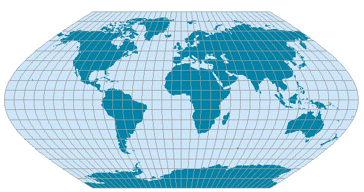

Eckert V
Usage

Usage:*
The Eckert V projection
has equidistant parallels of latitude but is not equal-area. The meridians
are sinusoid, except for the straight central meridian (which is half the
length of the equator). It is in effect an arithmetic average of both x- and
y-coordintes for the plate carree and the sinusoidal projections (the y-coordinates
for both are the same).
*Usage information source:
Snyder, John P. (1993) Flattening the Earth:
Two Thousand Years of Map Projections. Chicago:
The University of Chicago Press.
Back to DSS Main Page